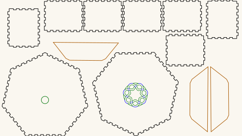
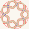

Kalimba — a seven-sided box and a septafoil sound hole
A kalimba is a lamellophone: tuned metal tines fixed over a bridge on a resonating body, plucked with the thumbs. This repository holds the body — a seven-sided box with a seven-fold knot rosette cut into one face — and the sound hole on its own.
Seven and seven is the whole idea. The box has seven sides, and the rosette is a septafoil: one continuous ribbon crossing itself seven times, so the sound hole echoes the plan of the thing it is cut into.
The tines, bridge, and any tuning are not here. Nothing in these files is an instrument on its own.
Get the files
- Everything as a ZIP — both cut files.
- Repository — if you want to change the box or the rosette.
- Or click either picture below to download that one cut file.
Released under CC0 1.0 — do what you like with them, no attribution needed. Built for LaserMadeMusic.
The two files
Click either to download it. The pictures are display renderings — the cut files draw a hairline on no background at all, which a browser shows almost invisibly, so these are thickened and painted onto a light ground. Colours and positions are untouched.
 |
| KalimbaSeptaBox.svg · the whole body, 583 × 270mm sheet |
 |
| KalimbaSeptafoilSoundhole-r30.svg · the rosette alone, 61 × 61mm |
{kind=link}
{kind=link}
What the box sheet contains
Measured out of the file, not copied from whatever drew it:
| Part | Count | Size | Stroke |
|---|---|---|---|
| Side panels, finger-jointed | 7 | 79.3 × 65.3mm each | black |
| Face, plain | 1 | 175.8 × 171.4mm | black |
| Face, with the rosette | 1 | 175.8 × 171.7mm | purple #7c00ff |
| Rosette cut | — | 60mm circle | red #ff0000 |
| Rosette engrave | — | interlace hints | blue #0000ff |
| Reference bar | 1 | 100 × 10mm | black — do not cut |
Seven sides, two faces. The sheet is 583 × 270mm, millimetre-true — 1 user unit = 1 mm with a physical width/height — so it prints and cuts at real size.
Two things to fix before you send it
The reference bar is not a part. It is a 100mm scale marker the generator adds, labelled 100.0mm, burn:0.07mm, sitting at the bottom left. Its rectangle is drawn in the same black as the seven side panels, so a colour-keyed job that cuts black will cut it too, and you will find a 100 × 10mm offcut you did not want. Delete it, or move it to a non-cutting layer. Its text is a red fill rather than a stroke, which most laser software ignores — but if you have mapped red to cut for the rosette, check what yours does with it.
The blue is an engrave, not a cut. The #0000ff lines are the rosette's over/under interlace hints. They run across the ribbon, so cutting them severs it. Give them a score or engrave operation, or delete the layer.
Give every colour you keep an explicit operation. A per-colour job silently skips any colour you leave unmapped.
What the sound-hole file contains
KalimbaSeptafoilSoundhole-r30.svg is the rosette alone on a 61 × 61mm sheet: a 30mm radius hole, one self-crossing ribbon 4mm wide with seven crossings, 56% of the disc removed, narrowest cut 4.30mm. Red is the cut, blue the engrave.
It is the same design the companion repository ships as 2-lead_7-bight_knot_radius30mm.svg — the cut path data is byte-for-byte identical, which is worth knowing if you want to substitute one for the other. The knotwork sound holes repository documents the family it belongs to and generates any coprime leads × bights.
It is an earlier render, and two things have moved on since. It carries a preview group filled #d8c9a8 — a display tint that is no longer emitted, and which is a fill rather than a stroke, so a colour-keyed job will usually ignore it but should be checked. And it predates the rim continuations: the current generator adds eight short engrave lines carrying the ribbon's edges out across each anchor, on a 64mm canvas rather than 61mm. The cut is unaffected either way.
Before you cut
Material and thickness are yours, and the finger joints are not. The joints in the box sheet were generated for one specific thickness, and finger joints do not tolerate being cut in stock they were not sized for — too thin and they rattle, too thick and they will not go together. The sheet does not record which thickness it assumed, so measure a test joint before committing to the full sheet.
Nothing here has been validated against cut stock, and no acoustic claim is made. A kalimba body is a resonator; how it sounds depends on the material, the thickness, how well the box closes, and the tines — none of which are decided by these files.
The rosette removes 56% of its disc. That is a lot of material out of a face that also has to hold the box square.
Files
KalimbaSeptaBox.svg | the whole body — seven sides, two faces, rosette, reference bar |
KalimbaSeptafoilSoundhole-r30.svg | the rosette on its own |
previews/ | display renderings — not cut files |
index.md · index.html | this page; the markdown is the source |